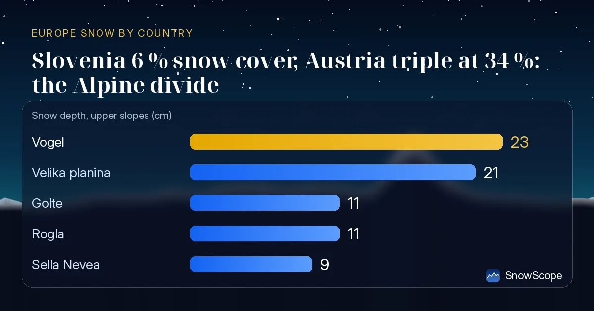

Slovenia 6 % snow cover, Austria triple at 34 %: the Alpine divide
The snow divide across the Alpine border is stark. Austria carries three times more snow cover than Slovenia as November ends, with high peaks in both countries still largely bare. The Julian Alps hold Slovenia's best chance—10 cm fell there in three days—but the season remains embryonic.
See the live snow forecast for Vogel in the SnowScope appSnow depth, powder alerts and the 3D map, free.
Austria leads by a wide margin
Austria's modelled snow cover stands at 34 %, more than five times Slovenia's 6 %. The difference reflects altitude and storm track: Austrian resorts sit higher and their western ranges catch moisture-laden Atlantic systems more directly. Kaprun in Austria has accumulated 66 cm; Slovenia's leader, Vogel, sits at 23 cm.
This gap will likely widen in the coming week. Austria's forecast peaks at 47 cm of new snow across the country in seven days. Slovenia faces only 7 cm through the same window. The orographic effect—mountains wringing moisture from air masses—favours the taller, western-facing slopes of Austria and Italy over Slovenia's lower terrain.
| Country | White | Deepest resort | Next 7 days |
|---|---|---|---|
| Slovenia | 6 % | Vogel | 7 cm |
| Austria | 34 % | Kaprun | 47 cm |
| Italy | 19 % | Prali | 85 cm |

Italy also ahead, but snow concentrated at altitude
Italy holds 19 % snow cover—triple Slovenia's share—and its leader, Prali, has 51 cm at 2,500 m. More tellingly, Italy's forecast for the next seven days reaches 85 cm, the highest in the region. Slovenia sits between two neighbours that will receive substantially more fresh snow in the days ahead.
Height matters enormously. In Slovenia, the snow line today sits at 2,000 m. Only the band between 2,000 and 2,500 m shows real accumulation (mean 4 cm, 73 % cover). Below 1,500 m, cover drops to 9 % or less. Ski resorts that struggle to reach 1,700 m will find November marginal at best.
Julian Alps offer the best early-season ground
Within Slovenia, the Julian Alps stand apart. That range received 10 cm in the past 72 hours—the highest in the country. Vogel, the Julian resort at 1,731 m top elevation, holds 23 cm, the deepest base anywhere in Slovenia. Its forecast for the next three days adds another 2 cm.
The Kamnik-Savinja Alps to the east received only 3 cm in three days and show no meaningful fresh snow ahead. Lower resorts like Golte (1,570 m), Rogla (1,511 m) and Sella Nevea (despite its height at 2,137 m, only 9 cm today) lag further behind. For anyone hoping to ski in Slovenia this week, the Julian Alps are the only realistic target.
Cover collapsed since yesterday; a retreat after a week of gain
The measured snow extent shrank dramatically from 1,130 km² yesterday to 430 km² today—a loss of 700 km². This sharp drop likely reflects either warm-air intrusion or model adjustment rather than a true melt event at high elevation; ground-measured depths have not fallen proportionally. The thaw was concentrated at lower elevations where November snow is thinnest and most ephemeral.
Over seven days, however, the picture is less dire. Snow extent stood at only 150 km² a week ago; today's 430 km² represents a gain of 280 km². The early season offered a brief window of accumulation, now followed by retreat. Skiers arriving this week will encounter sparse, patchy snow except on high terrain.
Next snowfall arrives Thursday; the real test arrives next week
Thursday 19 November brings the heaviest single fall: our model forecasts 6 cm, with the Julian Alps likely seeing more. That day marks the first meaningful snow event at our model grid; it will refresh the diminished pack from yesterday's melt. Friday and beyond see lighter snow (1 cm or less).
The larger picture emerges 25 November to 1 December. That eight-to-14-day window carries a forecast of up to 22 cm—the most substantial accumulation event in the full 14-day window. Early-season runs next week may feel thinner than ideal, but late November promises to refill the mountains. Neighbouring Austria and Italy face the same delayed timeline, though with higher baseline snow.
What the numbers tell you
Only 13 of Slovenia's 27 resorts report any snow today. Vogel and Velika planina (21 cm) are tracking near their late-November normals—a good sign for consistency, if not abundance. Sella Nevea, the highest resort at 2,137 m, has gained 4 cm in three days and will see 9 cm in the next three—a steeper upward trend than lower competitors.
By regional comparison, you are roughly one to two weeks behind Austria and Italy in useful snow. The Austrian high country is already skiable; Slovenia's high peaks will follow by early December. The SnowScope map shows exactly which slopes hold cover on each day.
Tips for skiers
- Target the Julian Alps (Vogel) or Velika planina above 1,600 m if you plan to ski Slovenia this week. Lower resorts carry too little snow for safety or pleasure.
- Thursday's fresh snow will improve conditions; expect best conditions Friday to Sunday as the snow consolidates. Avoid exposed lower slopes where rocks will be just under the surface.
- Check the official avalanche bulletin before touring; early-season snow bonds poorly to thin base layers and can slide unexpectedly.
- If you can wait until 25 November onwards, conditions will be significantly deeper and more stable. Austria and Italy offer faster accumulation right now.
- Watch for rapid melt if temperatures spike mid-week; November snow is wet and ephemeral at elevation below 1,800 m.
About these numbers
Resort snow depths are the deepest snow on the resort's upper slopes from the SnowScope snow model (about 1 km, run of 17 November); they are estimates for an area, not a measurement at one point. Station values are measurements on the date shown. Forecasts can change. Always read the official avalanche bulletin before going off-piste.
Cite this report
For research, teaching or the press: the numbers and charts are free to reuse under CC BY 4.0 with this citation.
SnowScope (2026), Slovenia 6 % snow cover, Austria triple at 34 %: the Alpine divide, https://snowscope.app/blog/en/2026/11/slovenia-snow-report-17-november-2026.html, accessed 2026-11-17
SnowScope (Atlas Labs). (2026, November 17). Slovenia 6 % snow cover, Austria triple at 34 %: the Alpine divide. SnowScope snow reports. https://snowscope.app/blog/en/2026/11/slovenia-snow-report-17-november-2026.html
BibTeX
@misc{snowscope2026sloveniasnowreport17nove,
author = {{SnowScope (Atlas Labs)}},
title = {Slovenia 6 % snow cover, Austria triple at 34 %: the Alpine divide},
year = {2026},
month = nov,
howpublished = {\url{https://snowscope.app/blog/en/2026/11/slovenia-snow-report-17-november-2026.html}},
note = {Published 2026-11-17 12:17 UTC; accessed 2026-11-17}
}· CC BY 4.0 · Methods, data and tools →
Vogel: snow and temperature by height, this winter vs last (tools) →
Follow Vogel
Free: a message when fresh snow is coming, and the forecast every morning.
More snow reports

German mountains face significant snow arrival over seven days, with up to 29 cm possible. Data from 18 November.

From 13 to 19 November 2026 Slovenia got the most snow and kept it; Serbia and Croatia had a deep but short white weekend; Montenegro only on Durmitor; Bulgaria almost none. The ranking, with links to each country report.

Himalaya snow cover in November 2026 from NASA MODIS: snow on 610,409 km² of ground above 2,000 m between the Hindu Kush and Bhutan, half the clear ground white from about 4,800 m in Nepal and 3,600 m in the Karakoram. The NDSI explained, plus shadows, cloud and the low autumn sun.